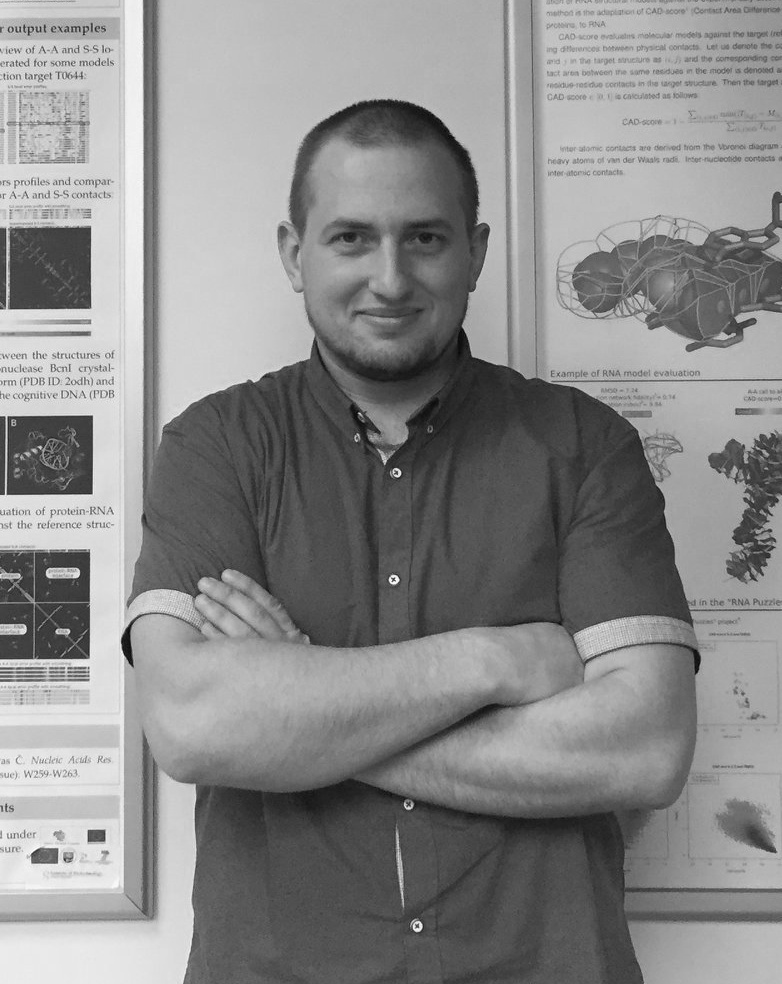

Updated on 2021-03-15.
Latest CV online: https://kliment-olechnovic.github.io/curriculum-vitae | pdf.
VoroCNN: Deep convolutional neural network built on 3D Voronoi tessellation of protein structures.
Igashov I, Olechnovič K, Kadukova M, Venclovas Č, Grudinin S.
Bioinformatics. 2021 Feb 23.
doi:10.1093/bioinformatics/btab118.
PMID:33620450.
Template-based modeling of diverse protein interactions in CAPRI rounds 38-45.
Dapkūnas J, Kairys V, Olechnovič K, Venclovas Č.
Proteins. 2020 Aug;88(8):939-947.
doi:10.1002/prot.25845.
PMID:31697420.
Blind prediction of homo- and hetero-protein complexes: The CASP13-CAPRI experiment.
Lensink MF, Brysbaert G, Nadzirin N, Velankar S, Chaleil RAG, Gerguri T, Bates PA, Laine E, Carbone A, Grudinin S, Kong R, Liu RR, Xu XM, Shi H, Chang S, Eisenstein M, Karczynska A, Czaplewski C, Lubecka E, Lipska A, Krupa P, Mozolewska M, Golon Ł, Samsonov S, Liwo A, Crivelli S, Pagès G, Karasikov M, Kadukova M, Yan Y, Huang SY, Rosell M, Rodríguez-Lumbreras LA, Romero-Durana M, Díaz-Bueno L, Fernandez-Recio J, Christoffer C, Terashi G, Shin WH, Aderinwale T, Maddhuri Venkata Subraman SR, Kihara D, Kozakov D, Vajda S, Porter K, Padhorny D, Desta I, Beglov D, Ignatov M, Kotelnikov S, Moal IH, Ritchie DW, Chauvot de Beauchêne I, Maigret B, Devignes MD, Ruiz Echartea ME, Barradas-Bautista D, Cao Z, Cavallo L, Oliva R, Cao Y, Shen Y, Baek M, Park T, Woo H, Seok C, Braitbard M, Bitton L, Scheidman-Duhovny D, Dapkūnas J, Olechnovič K, Venclovas Č, Kundrotas PJ, Belkin S, Chakravarty D, Badal VD, Vakser IA, Vreven T, Vangaveti S, Borrman T, Weng Z, Guest JD, Gowthaman R, Pierce BG, Xu X, Duan R, Qiu L, Hou J, Ryan Merideth B, Ma Z, Cheng J, Zou X, Koukos PI, Roel-Touris J, Ambrosetti F, Geng C, Schaarschmidt J, Trellet ME, Melquiond ASJ, Xue L, Jiménez-García B, van Noort CW, Honorato RV, Bonvin AMJJ, Wodak SJ.
Proteins. 2019 Dec;87(12):1200-1221.
doi:10.1002/prot.25838.
PMID:31612567.
Structural modeling of protein complexes: Current capabilities and challenges.
Dapkūnas J, Olechnovič K, Venclovas Č.
Proteins. 2019 Dec;87(12):1222-1232.
doi:10.1002/prot.25774.
PMID:31294859.
Estimation of model accuracy in CASP13.
Cheng J, Choe MH, Elofsson A, Han KS, Hou J, Maghrabi AHA, McGuffin LJ, Menéndez-Hurtado D, Olechnovič K, Schwede T, Studer G, Uziela K, Venclovas Č, Wallner B.
Proteins. 2019 Dec;87(12):1361-1377.
doi:10.1002/prot.25767.
PMID:31265154.
VoroMQA web server for assessing three-dimensional structures of proteins and protein complexes.
Olechnovič K, Venclovas Č.
Nucleic Acids Res. 2019 Jul 2;47(W1):W437-W442.
doi:10.1093/nar/gkz367.
PMID:31073605.
Comparative analysis of methods for evaluation of protein models against native structures.
Olechnovič K, Monastyrskyy B, Kryshtafovych A, Venclovas Č.
Bioinformatics. 2019 Mar 15;35(6):937-944.
doi:10.1093/bioinformatics/bty760.
PMID:30169622.
Modeling of protein complexes in CAPRI Round 37 using template-based approach combined with model selection.
Dapkūnas J, Olechnovič K, Venclovas Č.
Proteins. 2018 Mar;86 Suppl 1:292-301.
doi:10.1002/prot.25378.
PMID:28905467.
VoroMQA: Assessment of protein structure quality using interatomic contact areas.
Olechnovič K, Venclovas Č.
Proteins. 2017 Jun;85(6):1131-1145.
doi:10.1002/prot.25278.
PMID:28263393.
The PPI3D web server for searching, analyzing and modeling protein-protein interactions in the context of 3D structures.
Dapkūnas J, Timinskas A, Olechnovič K, Margelevičius M, Diciunas R, Venclovas Č.
Bioinformatics. 2017 Mar 15;33(6):935-937.
doi:10.1093/bioinformatics/btw756.
PMID:28011769.
The CAD-score web server: contact area-based comparison of structures and interfaces of proteins, nucleic acids and their complexes.
Olechnovič K, Venclovas Č.
Nucleic Acids Res. 2014 Jul;42(Web Server issue):W259-63.
doi:10.1093/nar/gku294.
PMID:24838571.
The use of interatomic contact areas to quantify discrepancies between RNA 3D models and reference structures.
Olechnovič K, Venclovas Č.
Nucleic Acids Res. 2014 May;42(9):5407-15.
doi:10.1093/nar/gku191.
PMID:24623815.
Voronota: A fast and reliable tool for computing the vertices of the Voronoi diagram of atomic balls.
Olechnovič K, Venclovas Č.
J Comput Chem. 2014 Mar 30;35(8):672-81.
doi:10.1002/jcc.23538.
PMID:24523197.
CAD-score: a new contact area difference-based function for evaluation of protein structural models.
Olechnovič K, Kulberkytė E, Venclovas Č.
Proteins. 2013 Jan;81(1):149-62.
doi:10.1002/prot.24172.
PMID:22933340.
Voroprot: an interactive tool for the analysis and visualization of complex geometric features of protein structure.
Olechnovič K, Margelevičius M, Venclovas Č.
Bioinformatics. 2011 Mar 1;27(5):723-4.
doi:10.1093/bioinformatics/btq720.
PMID:21186248.
Contact Area-Based Structural Analysis of Proteins and Their Complexes Using CAD-Score.
Olechnovič K, Venclovas Č.
In: Zoltán Gáspári (eds) Structural Bioinformatics: Methods and Protocols, Methods in Molecular Biology, vol. 2112. Springer. 2020.
In Silico Modeling of Inhibitor Binding to Carbonic Anhydrases.
Kairys V, Olechnovič K, Raškevičius V, Matulis D.
In: Matulis D. (eds) Carbonic Anhydrase as Drug Target. Springer, Cham. 2019.
Methods for the analysis and assessment of the three-dimensional structures of proteins and nucleic acids: development and applications.
Olechnovič K.
Doctoral dissertation, Vilnius University, 2017.
Baltymų ir nukleorūgščių erdvinių struktūrų analizės ir vertinimo metodai: kūrimas ir taikymas.
Olechnovič K.
Doctoral dissertation summary in Lithuanian, Vilnius University, 2017.
Kompiuteriai padeda pažinti sudėtingą baltymų pasaulį.
Dapkūnas J, Olechnovič K.
Popular science article in SPECTRUM. 2017 1(26), ISSN 1822-0147.
Journal cover image based on the article "VoroMQA: Assessment of protein structure quality using interatomic contact areas".
Olechnovič K, Venclovas Č.
Cover Image for Proteins. 2019 Volume 85, Issue 6.
doi:10.1002/prot.25129.
Poster images online: kliment-olechnovic.github.io/curriculum-vitae/posters
Voronota: a standalone software package of various tools for analyzing three-dimensional structures of biological macromolecules using the Voronoi diagram of atomic balls (includes the latest versions of CAD-score and VoroMQA methods).
kliment-olechnovic.github.io/voronota
VoroMQA web server for the assessment of protein structure quality using interatomic contact areas.
https://bioinformatics.lt/wtsam/voromqa
VoroContacts web server for the computation and interactive querying of Voronoi tessellation-derived contacts.
https://bioinformatics.lt/wtsam/vorocontacts
CAD-score web server for contact area-based comparison of structures and interfaces of proteins, nucleic acids and their complexes.
https://bioinformatics.lt/cad-score/
Voroprot: an interactive tool for exploring some tesselation-derived features of protein structures (no longer maintained).
https://bioinformatics.lt/software/voroprot
CASP (Critical Assessment of Techniques for Protein Structure Prediction) and CAPRI (Critical Assessment of PRedicted Interactions) are world-wide experiments focused on the blind testing of methods for protein structural bioinformatics.